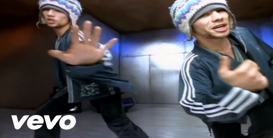

1992-1993: Inception and "Emergency on Planet Earth"
In the early 1990s, the seeds of Jamiroquai were planted, and the band officially took root in 1992 under the visionary leadership of Jay Kay. The debut album, "Emergency on Planet Earth" (1993), not only marked their entrance into the music scene but also unveiled the distinctive musical cocktail they would become known for. The album's fusion of funk, acid jazz, and soul set the stage for what would be a genre-defying career. Jay Kay's socially conscious lyrics brought depth to their sound, addressing environmental concerns at a time when such themes were not as prevalent in mainstream music.
1994-1995: "The Return of the Space Cowboy"
As the world caught on to the funky vibes of Jamiroquai, the band returned in 1994 with "The Return of the Space Cowboy." This phase marked a significant evolution in their musical exploration, delving into themes of space and identity. The album showcased not only their musical versatility but also their ability to weave narratives into their sound. The synergy between Jay Kay's soulful vocals and the band's tight instrumentation solidified their place as a musical force to be reckoned with.

1996-1998: Global Breakthrough with "Virtual Insanity"
The turning point in Jamiroquai's journey came with the release of "Travelling Without Moving" (1996). The album catapulted them into global stardom, thanks to the mega-hit "Virtual Insanity." Beyond its infectious groove, the song's thought-provoking lyrics resonated with audiences worldwide. The iconic music video, featuring Jay Kay's signature dance moves on a moving floor, became a cultural touchstone. This period marked not only commercial success but also the band's ability to create music that transcended boundaries.
1999-2000: "Synkronized" and Continued Success
The late '90s saw Jamiroquai's musical evolution continuing with "Synkronized" (1999). The album seamlessly blended their classic funk sound with electronic elements, showcasing a willingness to experiment without losing their core identity. Tracks like "Canned Heat" demonstrated their knack for crafting upbeat, danceable tunes. Jamiroquai's adaptability and ability to stay relevant in the ever-changing music landscape became evident during this period.
2001-2004: "A Funk Odyssey" and Exploration
With "A Funk Odyssey" (2001), Jamiroquai embarked on a journey of musical exploration. The album delved into electronic and dance influences while maintaining the funk-infused core that defined their sound. This era showcased the band's willingness to push boundaries and experiment with different styles, gaining praise for their eclectic approach to music.
2005-2016: Evolution and Hiatus
The mid-2000s marked a period of evolution for Jamiroquai with albums like "Dynamite" (2005) and "Rock Dust Light Star" (2010). The band continued to explore various musical styles, incorporating elements of rock and pop into their repertoire. However, after the release of "Rock Dust Light Star," Jamiroquai decided to take a hiatus, allowing members to explore individual projects and recharge creatively.
2017 and Beyond: Resurgence with "Automaton"
In 2017, Jamiroquai made a triumphant return to the music scene with "Automaton." The album seamlessly merged their classic funk sound with contemporary electronic elements, reaffirming their adaptability and continued relevance. The release signaled that Jamiroquai, even after decades in the industry, could still captivate audiences with their innovative approach to music. Throughout their journey, Jamiroquai's live performances remained a testament to their energy and Jay Kay's charismatic stage presence. Their enduring legacy in the music world continues to be defined by a commitment to pushing boundaries and crafting a sound that transcends genres, leaving an indelible mark on the landscape of contemporary music.